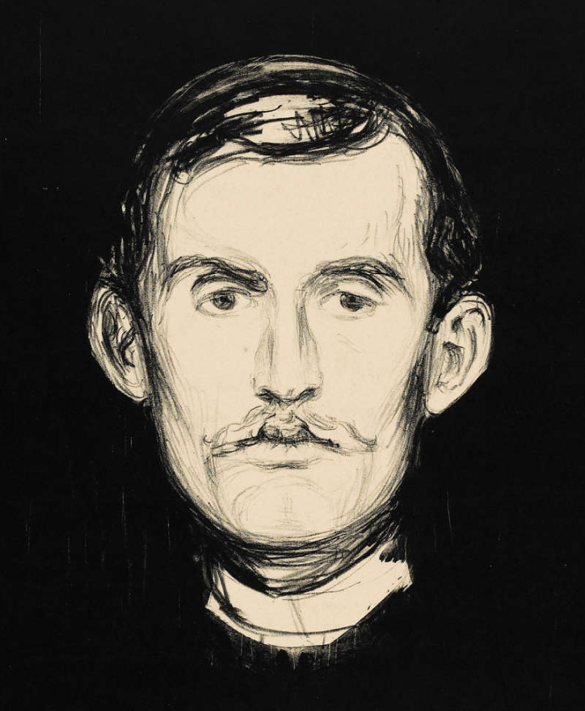

ESERLER/SERGİLER
Edvard Munch (IPA: [ˈɛdvɑʈ muŋk]) (12 Aralık 1863 - 23 Ocak
1944) özellikle Çığlık isimli tablosuyla tanınmış Norveçli
ekspresyonist ressamdır.
Ruhsal ve duygusal konuları işlediği resimleriyle
tanındı.Alman dışavurumculuk akımının gelişmesine önemli
katkıları oldu. Başlangıçta resimlerinde egemen olan içe
dönük ve karamsar havanın yerini, yaşamının son yıllarına doğru yaşama sevinci almıştır.
Hayatın Frizleri adlı serinin bir parçası olan Çığlık (1893; ilk
adı ile Umutsuzluk), tablosunda Munch hayat, aşk, korku,
ölüm ve melankoli gibi öğeleri işledi. Diğer pek çok eserinde
olduğu gibi bunun da birçok versiyonunu yaptı.
1994 ve 2004 Yıllarında iki versiyon çalındı, her ikisi de tekrar
bulunmuştur.

Edvard Munch Edebi Kişiliği
Edvard Munch, periyodik olarak yaşamı tehdit eden hastalıklarla ve annesinin ve
kız kardeşinin erken ölümleriyle kuşatılmış bir evde büyüdü; bunların tümü,
Munch'un bir Hıristiyan köktenci olan babası tarafından ilahi ceza eylemleri olarak
açıklandı. Bu güçlü rastlantısal trajik olaylar matrisi ve onların kaderci yorumu,
genç sanatçı üzerinde ömür boyu sürecek bir izlenim bıraktı ve kaygı, duygusal
ıstırap ve insan kırılganlığı temalarıyla nihai meşguliyetine kararlı bir şekilde
katkıda bulundu.
Munch, yoğun renkleri, yarı-soyut ve gizemli, genellikle açık uçlu temalarının
evrensel öneme sahip semboller olarak işlev görmesini amaçladı. Böylece çizimleri,
resimleri ve baskıları psikolojik tılsımların niteliğini alıyor. Munch'ın kişisel
deneyimlerinden kaynaklanmasına rağmen, yine de herhangi bir izleyicinin kendi
duygusal veya psikolojik durumunu ifade etme ve belki de hafifletme gücünü
taşıyorlar.
Munch'un çalışmalarında cinsel konu meseleleriyle sık sık meşgul olması,
hem sanatçının cinselliği sosyal uygunluktan duygusal ve fiziksel kurtuluş için bir araç
olarak bohem değerlemesi hem de çağdaşlarının bilinçaltı, bazen daha karanlık
yönlere açılan bir pencere olarak cinsel deneyime olan hayranlığından
kaynaklanmaktadır. Yakın çağdaşı Vincent van Gogh'a
benzer bir anlamda, etrafındaki dünyada gözlemlenen özne ile kendi psikolojik, duygusal ve / veya
ruhsal algısı arasında bir tür evlilik kaydetmeye çalışmıştır.